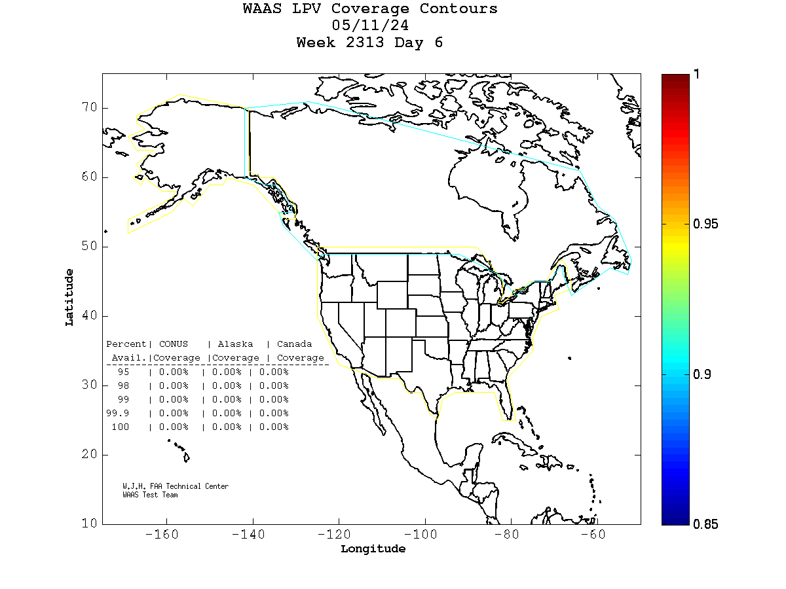
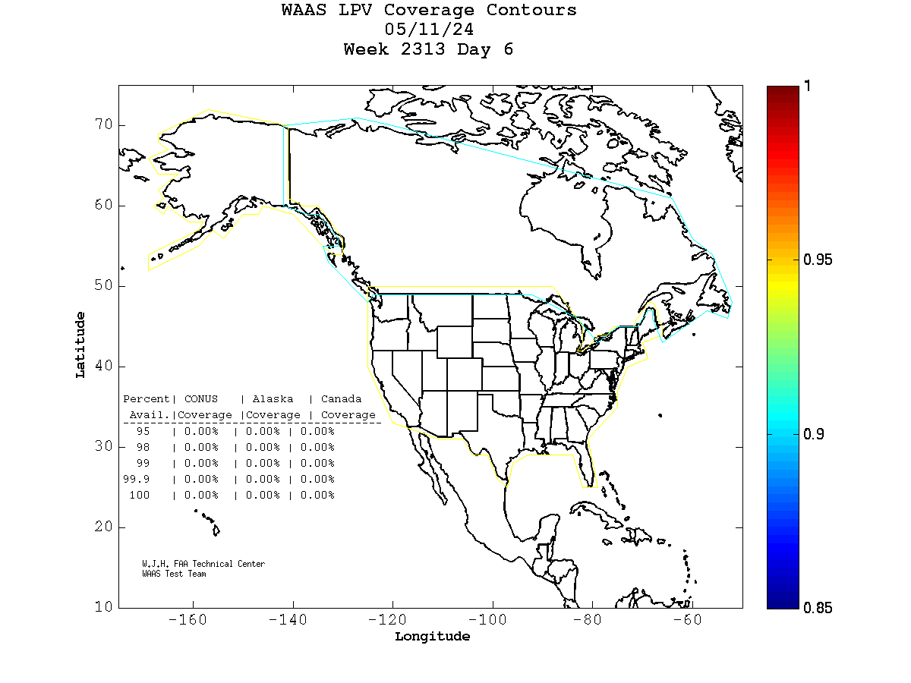
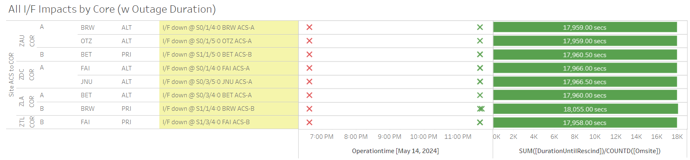

Weekly Highlights 20240508-20240515
SSM-WAAS-066 - CY24 Comm Upgrade
WAAS Engineering has released SSM-WAAS-066, and we are coordinating Cutover Start to begin the week of 4/8/2024. This SSM will accomplish the following:
- Remove the ZSE Comm Node from the WAAS Topology and upgrade Alaska WRS Comms
- Upgrade Ring 1 Mexico WRS-ZTL Comms (Ring 2 Mexico WRS-ZLA comms are not part of this modification)
- Upgrade O&Ms, C&Vs, and Core Routers to support comm changes

- 5/14 19:01 - SSM-WAAS-066 - YYR ACS-A Upgraded with W7.403L
- 5/14 19:07 - SSM-WAAS-066 - ZAU COR-A Upgraded with W7.403L
- 5/14 19:23 - SSM-WAAS-066 - YFB ACS-B Upgraded with W7.403L
- 5/14 19:36 - SSM-WAAS-066 - ZAU
COR-B Upgraded with W7.403L
- After upgrade, comm lost to ZAU PCU-D in Comm Node 1 – the PCU was powered OFF / ON and the issue cleared at 5/15 15:34
- 5/14 19:49 - SSM-WAAS-066 - YFB ACS-A Upgraded with W7.403L
- 5/14 19:56 - SSM-WAAS-066 - ZDC COR-A Upgraded with W7.403L
- 5/14 20:16 - SSM-WAAS-066 - YYR ACS-B Upgraded with W7.403L
- 5/14 20:28 - SSM-WAAS-066 - ZDC COR-B Upgraded with W7.403L
Cutover Complete -- 2 Week Monitoring Period ends 5/29
Several of the new circuits have ongoing issues:
- OTZ - Following circuits not delivered / SA'd
- Ring 1 PRI to ZAU - FTIH-WS-053504
- Ring 2 PRI to ZLA - FTIH-WS-053508
- Ring 2 ALT to ZLA - FTIH-WS-053509
- BRW - Ring 2 ALT to ZLA - FTIH-WS-053531
- Troubleshooting ongoing...
5/10 - Extreme Storm LPV Outage
- 5/10 19:00 - All C&Vs alerted with SE 757 IGPs
with high GIVEI due to
Kp 8- storm/G4 knocking out LPV and LPV200; NOTAM GENERATED; the IGPs cleared at 5/11 10:23 (~55,370 seconds)- 5/10 20:55 - All C&Vs alerted with SE 831 - Extreme Storm Predicted 21:55
- 5/10 21:56 - All C&Vs alerted with SE 833 - Extreme Storm in Progress
- 5/11 09:22 - All C&Vs alerted with SE 833 - Extreme Storm Clearing 10:22; SE rescinded at 5/11 10:22
- 5/11 10:22 - All C&Vs alerted with SE 833 - Extreme Storm Cleared
 

5/12 - CM1 GUS Fault (1 PPS)
- 5/12 04:25 - GUS Switchover - S15 - CM1 Faulted from Primary with SEs 172-175 indicating 1 PPS fault; Control Powered and restored to Backup at 5/12 06:01
5/12 - HNL WRE-C Fault
- 5/12 05:33 - HNL WRE-C Faulted with SEs 52, 53, and 59; Reset and restored to Normal at 5/12 07:37
5/13 - MMX WRE-C OFFLINE
- 5/13 18:02 - MMX WRE-C processor apparently failed; could not be restored...
5/14 - Alaska GCI Outage
- 5/14 18:38 - Alaska GCI Telco outage affecting BET, FAI, JNU, OTZ (Full Outage), and BRW (down to one line) -- same group as last time; all lines cleared at 5/14 23:37 (~17960 seconds)

5/15 - AP1 CV-GUS Comm Fail SEs
- 5/15 14:35 - All C&Vs received flapping SE 738 CV-GUS Comm Failed to AP1 GUS (currently in Primary Mode), not apparently associated with any I/F downs; last event cleared at 5/15 18:20 (~838 seconds total)
5/15 - All Mexico OFFLINE
- 5/15 18:16 - All Ring 1 Mexico comms down hard; all Mexico OFFLINE...
Various Comm Impacts
* Does not include single-line impacts <60 seconds which do not cause an outage
Other Sites
- 5/8 03:44 - ZME Ring 1 ALT / Ring 2 PRI comms down hard; both lines cleared at 5/8 04:46 (~131 seconds)
- 5/8 04:14 - CDB Ring 2 comms flapping -- line down hard at 5/8 05:07; line cleared at 5/8 06:59 (~8115 seconds)
- 5/8 14:21 - ZSU Ring 1 PRI / Ring 2 ALT comms flapping; last events cleared at 5/8 14:32 (~556 seconds)
- 5/9 10:33 - CM1 Ring 1 ALT / Ring 2 PRI and YFB Ring 2 comms down and flapping; last events cleared at 5/9 10:56 (~1376 seconds total)
- 5/12 14:31 - JNU Ring 1 PRI / Ring 2 ALT comms flapping; last events cleared at 5/12 22:02 (~86 seconds total)
- 5/14 06:54 - BIL Ring 1 / Ring 2 all comms down hard; all lines cleared at 5/14 07:01 (~455 seconds)
Mexico Ring 1 Down for all Mexico -- Mexico OFFLINE
- 3/20 17:52 - MTP Ring 1 comms down hard...
- 4/25 15:38 - MSD Ring 1 comms down hard...
- 5/9 11:26 - MMD Ring 1 comm fault flapping causing No Data Reported flaps; last event cleared 5/9 17:42 (~1790 seconds total)
- 5/10 10:42 - MMD Ring 1 comm fault flapping causing No Data Reported flaps...
- 5/14 21:22 - MMD Ring 1 comms down hard...
- 5/15 18:16 - All Ring 1 Mexico comms down hard; all Mexico OFFLINE...
List of current offline WREs
List of current offline WREs -- ref WAAS Status Monitor
All Depot shipments to Mexico are halted until the customs process can be finalized
- MMX WRE-C - 5/15-... - Processor failed and could not be restored
- MPR WRE-B - 5/3-... - Inits failing -- looks like a bad freq std; due to shipping issues, there is no spare Freq Std and no ETA to recover WRE-B...
- MTP WRE-B - 7/21/23-... - PCU-B failing over and over again; input power tested good; disconnected power for other LRUs in WRE-B until PCU-B can be replaced; PCU-B has apparently been stable since 7/25 00:16 (no further power cycles on PCU)
5/11/23-... - MX Ring 2 Satcom Upgrade
MX WAAS Sites comm upgrades in progress:
- 2/15 - MMX Ring 2 successfully connected through Tijuana to ZLA COR-B!
- 11/2 - FTI has initiated coordination with Tijuana to install and test direct connection to Frequentis -- MMD Test on 12/6
- 10/27 - Frequentis has delivered to Tijuana, needs to be connected to FTI delivery
Further work / new cables needed at each WRS site to complete Ring 2 connection upgrades
FTI-Harris coordinating with SENEAM at TJX to complete end-to-end testing

Major Events


Comm Events